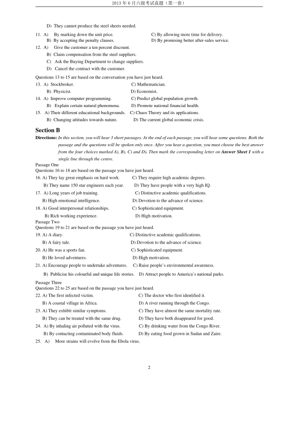
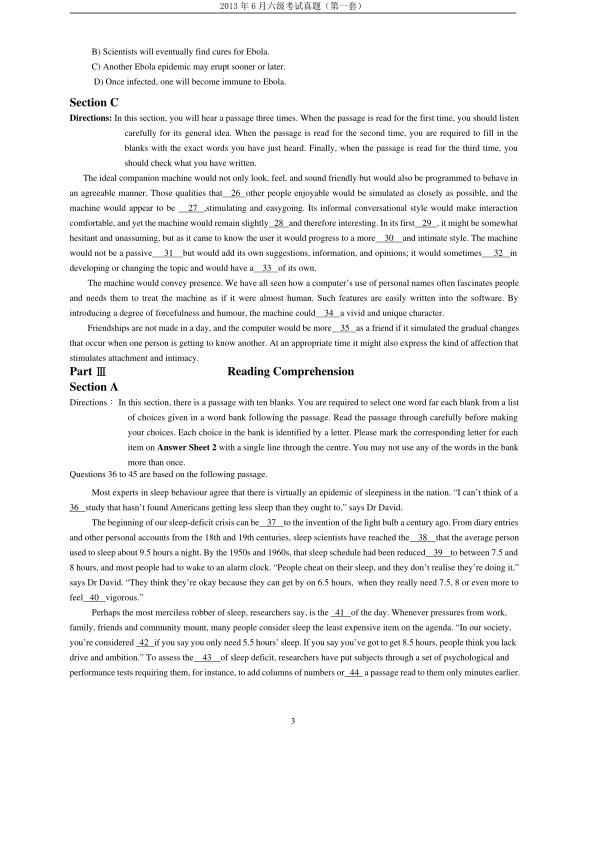
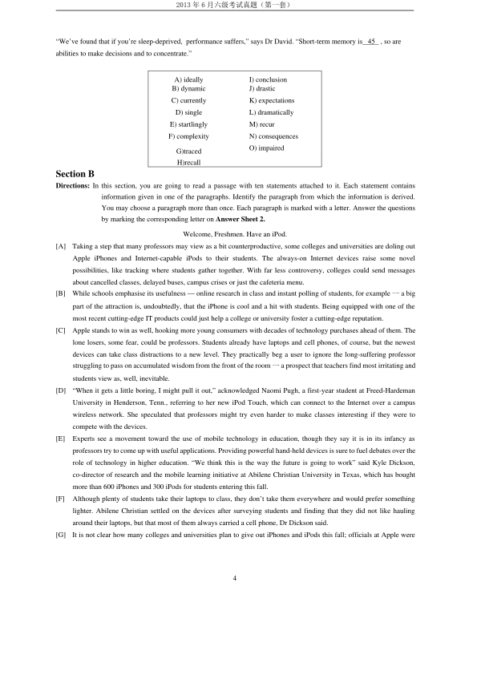
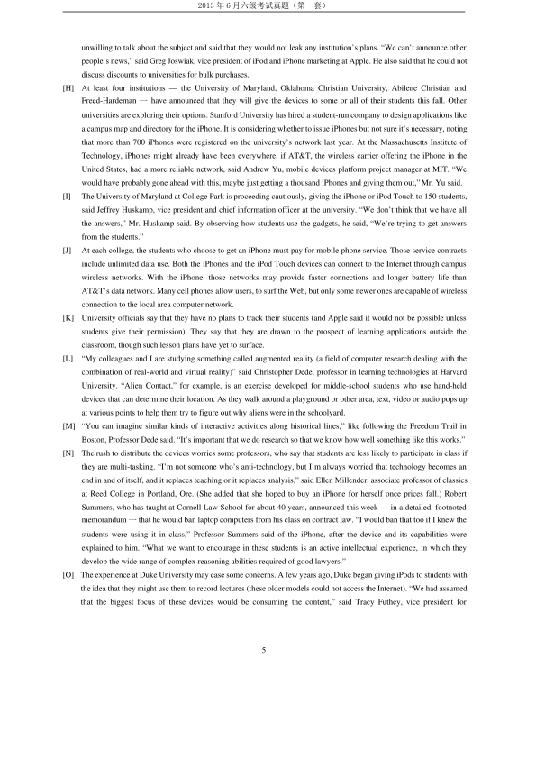
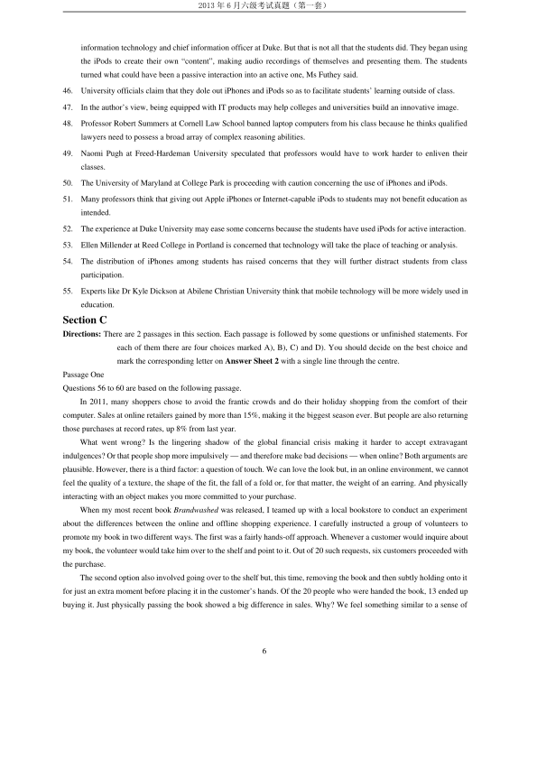
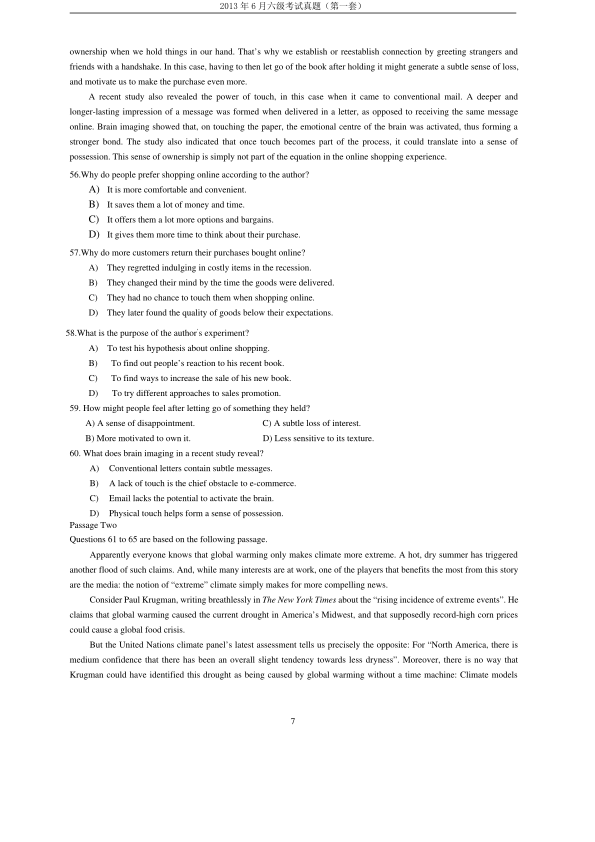
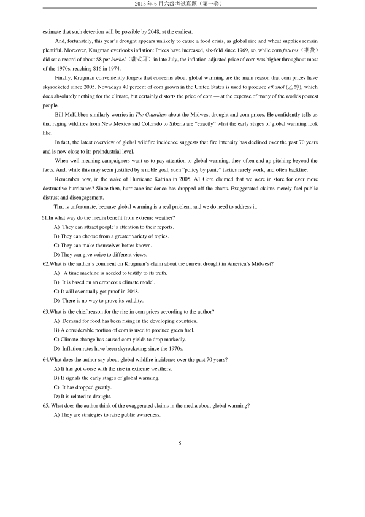

第 1 / 9 页

2013 年6 月六级考试真题（第一套）
1
2013 年6 月六级考试真题（第一套）
PartⅠ
Writing
Direction: For this part, you are allowed 30 minutes to write an essay commenting on the remark “A smile is the shortest
distance between two people.” You can cite examples to illustrate your point. You should write at least 150 words
but no more than 200 words.
PartⅡ
Listening Comprehension
Section A
Directions: In this section, you will hear 8 short conversations and 2 long conversations. At the end of each conversation, one
or more questions will be asked about what was said. Both the conversation and the questions will be
spoken only once. After each question there will be a pause. During the pause, you must read the four
choices marked A)，B)，C) and D), and decide which is the best answer. Then mark the corresponding letter
on Answer Sheet 1 with a single line through the centre.
1.
A) She has completely recovered.
C) She is still in a critical condition.
B) She went into shock after an operation.
D) She is getting much better.
2. A) Ordering a breakfast.
C) Buying a train ticket.
B) Booking a hotel room.
D) Fixing a compartment.
3. A) Most borrowers never returned the books to her.
B) The man is the only one who brought her book back.
C) She never expected anyone to return the books to her.
D) Most of the books she lent out came back without jackets.
4.
A) She left her work early to get some bargains last Saturday.
B) She attended the supermarket’s grand opening ceremony.
C) She drove a foil hour before finding a parking space.
D) She failed to get into the supermarket last Saturday.
5. A) He is bothered by the pain in his neck.
B) He cannot do his report without a computer.
C) He cannot afford to have a coffee break.
D) He feels sorry to have missed the report.
6. A) Only top art students can show their works in the gallery.
B) The gallery space is big enough for the man’s paintings.
C) The woman would like to help with the exhibition layout.
D) The man is uncertain how his art works will be received.
7.
A) The woman needs a temporary replacement for her assistant.
B) The man works in the same department as the woman does.
C) The woman will have to stay in hospital for a few days.
D) The man is capable of dealing with difficult people.
8.
A) It was better than the previous one.
C) It exaggerated the city’s economic problems.
B) It distorted the mayor’s speech.
D) It reflected the opinions of most economists.
Questions 9 to 12 are based on the conversation you have just heard.
9.
A)
To inform him of a problem they face.
C) To discuss the content of a project report.
B) To request him to purchase control desks.
D) To ask him to fix the dictating machine.
10. A)
They quote the best price in the market.
B) They manufacture and sell office furniture.
C) They cannot deliver the steel sheets on time.
查看 / 复制本页文字
2013 年6 月六级考试真题（第一套） 1 2013 年6 月六级考试真题（第一套） PartⅠ Writing Direction: For this part, you are allowed 30 minutes to write an essay commenting on the remark “A smile is the shortest distance between two people.” You can cite examples to illustrate your point. You should write at least 150 words but no more than 200 words. PartⅡ Listening Comprehension Section A Directions: In this section, you will hear 8 short conversations and 2 long conversations. At the end of each conversation, one or more questions will be asked about what was said. Both the conversation and the questions will be spoken only once. After each question there will be a pause. During the pause, you must read the four choices marked A)，B)，C) and D), and decide which is the best answer. Then mark the corresponding letter on Answer Sheet 1 with a single line through the centre. 1. A) She has completely recovered. C) She is still in a critical condition. B) She went into shock after an operation. D) She is getting much better. 2. A) Ordering a breakfast. C) Buying a train ticket. B) Booking a hotel room. D) Fixing a compartment. 3. A) Most borrowers never returned the books to her. B) The man is the only one who brought her book back. C) She never expected anyone to return the books to her. D) Most of the books she lent out came back without jackets. 4. A) She left her work early to get some bargains last Saturday. B) She attended the supermarket’s grand opening ceremony. C) She drove a foil hour before finding a parking space. D) She failed to get into the supermarket last Saturday. 5. A) He is bothered by the pain in his neck. B) He cannot do his report without a computer. C) He cannot afford to have a coffee break. D) He feels sorry to have missed the report. 6. A) Only top art students can show their works in the gallery. B) The gallery space is big enough for the man’s paintings. C) The woman would like to help with the exhibition layout. D) The man is uncertain how his art works will be received. 7. A) The woman needs a temporary replacement for her assistant. B) The man works in the same department as the woman does. C) The woman will have to stay in hospital for a few days. D) The man is capable of dealing with difficult people. 8. A) It was better than the previous one. C) It exaggerated the city’s economic problems. B) It distorted the mayor’s speech. D) It reflected the opinions of most economists. Questions 9 to 12 are based on the conversation you have just heard. 9. A) To inform him of a problem they face. C) To discuss the content of a project report. B) To request him to purchase control desks. D) To ask him to fix the dictating machine. 10. A) They quote the best price in the market. B) They manufacture and sell office furniture. C) They cannot deliver the steel sheets on time.
第 2 / 9 页

2013 年6 月六级考试真题（第一套）
2
D) They cannot produce the steel sheets needed.
11. A)
By marking down the unit price.
C) By allowing more time for delivery.
B) By accepting the penalty clauses.
D) By promising better after-sales service.
12. A)
Give the customer a ten percent discount.
B) Claim compensation from the steel suppliers.
C) Ask the Buying Department to change suppliers.
D) Cancel the contract with the customer.
Questions 13 to 15 are based on the conversation you have just heard.
13. A) Stockbroker.
C) Mathematician.
B) Physicist.
D) Economist.
14. A) Improve computer programming.
C) Predict global population growth.
B) Explain certain natural phenomena.
D) Promote national financial health.
15. A) Their different educational backgrounds.
C) Chaos Theory and its applications.
B) Changing attitudes towards nature.
D) The current global economic crisis.
Section B
Directions: In this section, you will hear 3 short passages. At the end of each passage, you will hear some questions. Both the
passage and the questions will be spoken only once. After you hear a question, you must choose the best answer
from the four choices marked A), B), C) and D). Then mark the corresponding letter on Answer Sheet 1 with a
single line through the centre.
Passage One
Questions 16 to 18 are based on the passage you have just heard.
16. A) They lay great emphasis on hard work.
C) They require high academic degrees.
B) They name 150 star engineers each year.
D) They have people with a very high IQ.
17. A) Long years of job training.
C) Distinctive academic qualifications.
B) High emotional intelligence.
D) Devotion to the advance of science.
18. A) Good interpersonal relationships.
C) Sophisticated equipment.
B) Rich working experience.
D) High motivation.
Passage Two
Questions 19 to 21 are based on the passage you have just heard.
19. A) A diary.
C) Distinctive academic qualifications.
B) A fairy tale.
D) Devotion to the advance of science.
20. A) He was a sports fan.
C) Sophisticated equipment.
B) He loved adventures.
D) High motivation.
21. A) Encourage people to undertake adventures.
C) Raise people’s environmental awareness.
B) Publicise his colourful and unique life stories.
D) Attract people to America’s national parks.
Passage Three
Questions 22 to 25 are based on the passage you have just heard.
22. A) The first infected victim.
C) The doctor who first identified it.
B) A coastal village in Africa.
D) A river running through the Congo.
23. A) They exhibit similar symptoms.
C) They have almost the same mortality rate.
B) They can be treated with the same drug.
D) They have both disappeared for good.
24. A) By inhaling air polluted with the virus.
C) By drinking water from the Congo River.
B) By contacting contaminated body fluids.
D) By eating food grown in Sudan and Zaire.
25. A)
More strains will evolve from the Ebola virus.
查看 / 复制本页文字
2013 年6 月六级考试真题（第一套） 2 D) They cannot produce the steel sheets needed. 11. A) By marking down the unit price. C) By allowing more time for delivery. B) By accepting the penalty clauses. D) By promising better after-sales service. 12. A) Give the customer a ten percent discount. B) Claim compensation from the steel suppliers. C) Ask the Buying Department to change suppliers. D) Cancel the contract with the customer. Questions 13 to 15 are based on the conversation you have just heard. 13. A) Stockbroker. C) Mathematician. B) Physicist. D) Economist. 14. A) Improve computer programming. C) Predict global population growth. B) Explain certain natural phenomena. D) Promote national financial health. 15. A) Their different educational backgrounds. C) Chaos Theory and its applications. B) Changing attitudes towards nature. D) The current global economic crisis. Section B Directions: In this section, you will hear 3 short passages. At the end of each passage, you will hear some questions. Both the passage and the questions will be spoken only once. After you hear a question, you must choose the best answer from the four choices marked A), B), C) and D). Then mark the corresponding letter on Answer Sheet 1 with a single line through the centre. Passage One Questions 16 to 18 are based on the passage you have just heard. 16. A) They lay great emphasis on hard work. C) They require high academic degrees. B) They name 150 star engineers each year. D) They have people with a very high IQ. 17. A) Long years of job training. C) Distinctive academic qualifications. B) High emotional intelligence. D) Devotion to the advance of science. 18. A) Good interpersonal relationships. C) Sophisticated equipment. B) Rich working experience. D) High motivation. Passage Two Questions 19 to 21 are based on the passage you have just heard. 19. A) A diary. C) Distinctive academic qualifications. B) A fairy tale. D) Devotion to the advance of science. 20. A) He was a sports fan. C) Sophisticated equipment. B) He loved adventures. D) High motivation. 21. A) Encourage people to undertake adventures. C) Raise people’s environmental awareness. B) Publicise his colourful and unique life stories. D) Attract people to America’s national parks. Passage Three Questions 22 to 25 are based on the passage you have just heard. 22. A) The first infected victim. C) The doctor who first identified it. B) A coastal village in Africa. D) A river running through the Congo. 23. A) They exhibit similar symptoms. C) They have almost the same mortality rate. B) They can be treated with the same drug. D) They have both disappeared for good. 24. A) By inhaling air polluted with the virus. C) By drinking water from the Congo River. B) By contacting contaminated body fluids. D) By eating food grown in Sudan and Zaire. 25. A) More strains will evolve from the Ebola virus.
第 3 / 9 页

2013 年6 月六级考试真题（第一套）
3
B) Scientists will eventually find cures for Ebola.
C) Another Ebola epidemic may erupt sooner or later.
D) Once infected, one will become immune to Ebola.
Section C
Directions: In this section, you will hear a passage three times. When the passage is read for the first time, you should listen
carefully for its general idea. When the passage is read for the second time, you are required to fill in the
blanks with the exact words you have just heard. Finally, when the passage is read for the third time, you
should check what you have written.
The ideal companion machine would not only look, feel, and sound friendly but would also be programmed to behave in
an agreeable manner. Those qualities that
26 other people enjoyable would be simulated as closely as possible, and the
machine would appear to be
27 ,stimulating and easygoing. Its informal conversational style would make interaction
comfortable, and yet the machine would remain slightly 28 and therefore interesting. In its first
29 , it might be somewhat
hesitant and unassuming, but as it came to know the user it would progress to a more
30
and intimate style. The machine
would not be a passive
31
but would add its own suggestions, information, and opinions; it would sometimes
32
in
developing or changing the topic and would have a
33 of its own.
The machine would convey presence. We have all seen how a computer’s use of personal names often fascinates people
and needs them to treat the machine as if it were almost human. Such features are easily written into the software. By
introducing a degree of forcefulness and humour, the machine could
34 a vivid and unique character.
Friendships are not made in a day, and the computer would be more
35 as a friend if it simulated the gradual changes
that occur when one person is getting to know another. At an appropriate time it might also express the kind of affection that
stimulates attachment and intimacy.
Part Ⅲ
Reading Comprehension
Section A
Directions：In this section, there is a passage with ten blanks. You are required to select one word far each blank from a list
of choices given in a word bank following the passage. Read the passage through carefully before making
your choices. Each choice in the bank is identified by a letter. Please mark the corresponding letter for each
item on Answer Sheet 2 with a single line through the centre. You may not use any of the words in the bank
more than once.
Questions 36 to 45 are based on the following passage.
Most experts in sleep behaviour agree that there is virtually an epidemic of sleepiness in the nation. “I can’t think of a
36 study that hasn’t found Americans getting less sleep than they ought to,” says Dr David.
The beginning of our sleep-deficit crisis can be
37
to the invention of the light bulb a century ago. From diary entries
and other personal accounts from the 18th and 19th centuries, sleep scientists have reached the
38
that the average person
used to sleep about 9.5 hours a night. By the 1950s and 1960s, that sleep schedule had been reduced
39
to between 7.5 and
8 hours, and most people had to wake to an alarm clock. “People cheat on their sleep, and they don’t realise they’re doing it,”
says Dr David. “They think they’re okay because they can get by on 6.5 hours, when they really need 7.5, 8 or even more to
feel 40 vigorous.”
Perhaps the most merciless robber of sleep, researchers say, is the 41 of the day. Whenever pressures from work,
family, friends and community mount, many people consider sleep the least expensive item on the agenda. “In our society,
you’re considered 42 if you say you only need 5.5 hours’ sleep. If you say you’ve got to get 8.5 hours, people think you lack
drive and ambition.” To assess the
43
of sleep deficit, researchers have put subjects through a set of psychological and
performance tests requiring them, for instance, to add columns of numbers or 44 a passage read to them only minutes earlier.
查看 / 复制本页文字
2013 年6 月六级考试真题（第一套） 3 B) Scientists will eventually find cures for Ebola. C) Another Ebola epidemic may erupt sooner or later. D) Once infected, one will become immune to Ebola. Section C Directions: In this section, you will hear a passage three times. When the passage is read for the first time, you should listen carefully for its general idea. When the passage is read for the second time, you are required to fill in the blanks with the exact words you have just heard. Finally, when the passage is read for the third time, you should check what you have written. The ideal companion machine would not only look, feel, and sound friendly but would also be programmed to behave in an agreeable manner. Those qualities that 26 other people enjoyable would be simulated as closely as possible, and the machine would appear to be 27 ,stimulating and easygoing. Its informal conversational style would make interaction comfortable, and yet the machine would remain slightly 28 and therefore interesting. In its first 29 , it might be somewhat hesitant and unassuming, but as it came to know the user it would progress to a more 30 and intimate style. The machine would not be a passive 31 but would add its own suggestions, information, and opinions; it would sometimes 32 in developing or changing the topic and would have a 33 of its own. The machine would convey presence. We have all seen how a computer’s use of personal names often fascinates people and needs them to treat the machine as if it were almost human. Such features are easily written into the software. By introducing a degree of forcefulness and humour, the machine could 34 a vivid and unique character. Friendships are not made in a day, and the computer would be more 35 as a friend if it simulated the gradual changes that occur when one person is getting to know another. At an appropriate time it might also express the kind of affection that stimulates attachment and intimacy. Part Ⅲ Reading Comprehension Section A Directions：In this section, there is a passage with ten blanks. You are required to select one word far each blank from a list of choices given in a word bank following the passage. Read the passage through carefully before making your choices. Each choice in the bank is identified by a letter. Please mark the corresponding letter for each item on Answer Sheet 2 with a single line through the centre. You may not use any of the words in the bank more than once. Questions 36 to 45 are based on the following passage. Most experts in sleep behaviour agree that there is virtually an epidemic of sleepiness in the nation. “I can’t think of a 36 study that hasn’t found Americans getting less sleep than they ought to,” says Dr David. The beginning of our sleep-deficit crisis can be 37 to the invention of the light bulb a century ago. From diary entries and other personal accounts from the 18th and 19th centuries, sleep scientists have reached the 38 that the average person used to sleep about 9.5 hours a night. By the 1950s and 1960s, that sleep schedule had been reduced 39 to between 7.5 and 8 hours, and most people had to wake to an alarm clock. “People cheat on their sleep, and they don’t realise they’re doing it,” says Dr David. “They think they’re okay because they can get by on 6.5 hours, when they really need 7.5, 8 or even more to feel 40 vigorous.” Perhaps the most merciless robber of sleep, researchers say, is the 41 of the day. Whenever pressures from work, family, friends and community mount, many people consider sleep the least expensive item on the agenda. “In our society, you’re considered 42 if you say you only need 5.5 hours’ sleep. If you say you’ve got to get 8.5 hours, people think you lack drive and ambition.” To assess the 43 of sleep deficit, researchers have put subjects through a set of psychological and performance tests requiring them, for instance, to add columns of numbers or 44 a passage read to them only minutes earlier.
第 4 / 9 页

2013 年6 月六级考试真题（第一套）
4
“We’ve found that if you’re sleep-deprived, performance suffers,” says Dr David. “Short-term memory is 45 , so are
abilities to make decisions and to concentrate.”
A) ideally
I) conclusion
B) dynamic
J) drastic
C) currently
K) expectations
D) single
L) dramatically
E) startlingly
M) recur
F) complexity
N) consequences
G)traced
H)recall
O) impaired
Section B
Directions: In this section, you are going to read a passage with ten statements attached to it. Each statement contains
information given in one of the paragraphs. Identify the paragraph from which the information is derived.
You may choose a paragraph more than once. Each paragraph is marked with a letter. Answer the questions
by marking the corresponding letter on Answer Sheet 2.
Welcome, Freshmen. Have an iPod.
[A]
Taking a step that many professors may view as a bit counterproductive, some colleges and universities are doling out
Apple iPhones and Internet-capable iPods to their students. The always-on Internet devices raise some novel
possibilities, like tracking where students gather together. With far less controversy, colleges could send messages
about cancelled classes, delayed buses, campus crises or just the cafeteria menu.
[B]
While schools emphasise its usefulness — online research in class and instant polling of students, for example 一a big
part of the attraction is, undoubtedly, that the iPhone is cool and a hit with students. Being equipped with one of the
most recent cutting-edge IT products could just help a college or university foster a cutting-edge reputation.
[C]
Apple stands to win as well, hooking more young consumers with decades of technology purchases ahead of them. The
lone losers, some fear, could be professors. Students already have laptops and cell phones, of course, but the newest
devices can take class distractions to a new level. They practically beg a user to ignore the long-suffering professor
struggling to pass on accumulated wisdom from the front of the room 一a prospect that teachers find most irritating and
students view as, well, inevitable.
[D]
“When it gets a little boring, I might pull it out,” acknowledged Naomi Pugh, a first-year student at Freed-Hardeman
University in Henderson, Tenn., referring to her new iPod Touch, which can connect to the Internet over a campus
wireless network. She speculated that professors might try even harder to make classes interesting if they were to
compete with the devices.
[E]
Experts see a movement toward the use of mobile technology in education, though they say it is in its infancy as
professors try to come up with useful applications. Providing powerful hand-held devices is sure to fuel debates over the
role of technology in higher education. “We think this is the way the future is going to work” said Kyle Dickson,
co-director of research and the mobile learning initiative at Abilene Christian University in Texas, which has bought
more than 600 iPhones and 300 iPods for students entering this fall.
[F]
Although plenty of students take their laptops to class, they don’t take them everywhere and would prefer something
lighter. Abilene Christian settled on the devices after surveying students and finding that they did not like hauling
around their laptops, but that most of them always carried a cell phone, Dr Dickson said.
[G]
It is not clear how many colleges and universities plan to give out iPhones and iPods this fall; officials at Apple were
查看 / 复制本页文字
2013 年6 月六级考试真题（第一套） 4 “We’ve found that if you’re sleep-deprived, performance suffers,” says Dr David. “Short-term memory is 45 , so are abilities to make decisions and to concentrate.” A) ideally I) conclusion B) dynamic J) drastic C) currently K) expectations D) single L) dramatically E) startlingly M) recur F) complexity N) consequences G)traced H)recall O) impaired Section B Directions: In this section, you are going to read a passage with ten statements attached to it. Each statement contains information given in one of the paragraphs. Identify the paragraph from which the information is derived. You may choose a paragraph more than once. Each paragraph is marked with a letter. Answer the questions by marking the corresponding letter on Answer Sheet 2. Welcome, Freshmen. Have an iPod. [A] Taking a step that many professors may view as a bit counterproductive, some colleges and universities are doling out Apple iPhones and Internet-capable iPods to their students. The always-on Internet devices raise some novel possibilities, like tracking where students gather together. With far less controversy, colleges could send messages about cancelled classes, delayed buses, campus crises or just the cafeteria menu. [B] While schools emphasise its usefulness — online research in class and instant polling of students, for example 一a big part of the attraction is, undoubtedly, that the iPhone is cool and a hit with students. Being equipped with one of the most recent cutting-edge IT products could just help a college or university foster a cutting-edge reputation. [C] Apple stands to win as well, hooking more young consumers with decades of technology purchases ahead of them. The lone losers, some fear, could be professors. Students already have laptops and cell phones, of course, but the newest devices can take class distractions to a new level. They practically beg a user to ignore the long-suffering professor struggling to pass on accumulated wisdom from the front of the room 一a prospect that teachers find most irritating and students view as, well, inevitable. [D] “When it gets a little boring, I might pull it out,” acknowledged Naomi Pugh, a first-year student at Freed-Hardeman University in Henderson, Tenn., referring to her new iPod Touch, which can connect to the Internet over a campus wireless network. She speculated that professors might try even harder to make classes interesting if they were to compete with the devices. [E] Experts see a movement toward the use of mobile technology in education, though they say it is in its infancy as professors try to come up with useful applications. Providing powerful hand-held devices is sure to fuel debates over the role of technology in higher education. “We think this is the way the future is going to work” said Kyle Dickson, co-director of research and the mobile learning initiative at Abilene Christian University in Texas, which has bought more than 600 iPhones and 300 iPods for students entering this fall. [F] Although plenty of students take their laptops to class, they don’t take them everywhere and would prefer something lighter. Abilene Christian settled on the devices after surveying students and finding that they did not like hauling around their laptops, but that most of them always carried a cell phone, Dr Dickson said. [G] It is not clear how many colleges and universities plan to give out iPhones and iPods this fall; officials at Apple were
第 5 / 9 页

2013 年6 月六级考试真题（第一套）
5
unwilling to talk about the subject and said that they would not leak any institution’s plans. “We can’t announce other
people’s news,” said Greg Joswiak, vice president of iPod and iPhone marketing at Apple. He also said that he could not
discuss discounts to universities for bulk purchases.
[H]
At least four institutions — the University of Maryland, Oklahoma Christian University, Abilene Christian and
Freed-Hardeman 一have announced that they will give the devices to some or all of their students this fall. Other
universities are exploring their options. Stanford University has hired a student-run company to design applications like
a campus map and directory for the iPhone. It is considering whether to issue iPhones but not sure it’s necessary, noting
that more than 700 iPhones were registered on the university’s network last year. At the Massachusetts Institute of
Technology, iPhones might already have been everywhere, if AT&T, the wireless carrier offering the iPhone in the
United States, had a more reliable network, said Andrew Yu, mobile devices platform project manager at MIT. “We
would have probably gone ahead with this, maybe just getting a thousand iPhones and giving them out,” Mr. Yu said.
[I]
The University of Maryland at College Park is proceeding cautiously, giving the iPhone or iPod Touch to 150 students,
said Jeffrey Huskamp, vice president and chief information officer at the university. “We don’t think that we have all
the answers,” Mr. Huskamp said. By observing how students use the gadgets, he said, “We’re trying to get answers
from the students.”
[J]
At each college, the students who choose to get an iPhone must pay for mobile phone service. Those service contracts
include unlimited data use. Both the iPhones and the iPod Touch devices can connect to the Internet through campus
wireless networks. With the iPhone, those networks may provide faster connections and longer battery life than
AT&T’s data network. Many cell phones allow users, to surf the Web, but only some newer ones are capable of wireless
connection to the local area computer network.
[K]
University officials say that they have no plans to track their students (and Apple said it would not be possible unless
students give their permission). They say that they are drawn to the prospect of learning applications outside the
classroom, though such lesson plans have yet to surface.
[L]
“My colleagues and I are studying something called augmented reality (a field of computer research dealing with the
combination of real-world and virtual reality)” said Christopher Dede, professor in learning technologies at Harvard
University. “Alien Contact,” for example, is an exercise developed for middle-school students who use hand-held
devices that can determine their location. As they walk around a playground or other area, text, video or audio pops up
at various points to help them try to figure out why aliens were in the schoolyard.
[M] “You can imagine similar kinds of interactive activities along historical lines,” like following the Freedom Trail in
Boston, Professor Dede said. “It’s important that we do research so that we know how well something like this works.”
[N]
The rush to distribute the devices worries some professors, who say that students are less likely to participate in class if
they are multi-tasking. “I’m not someone who’s anti-technology, but I’m always worried that technology becomes an
end in and of itself, and it replaces teaching or it replaces analysis,” said Ellen Millender, associate professor of classics
at Reed College in Portland, Ore. (She added that she hoped to buy an iPhone for herself once prices fall.) Robert
Summers, who has taught at Cornell Law School for about 40 years, announced this week — in a detailed, footnoted
memorandum 一that he would ban laptop computers from his class on contract law. “I would ban that too if I knew the
students were using it in class,” Professor Summers said of the iPhone, after the device and its capabilities were
explained to him. “What we want to encourage in these students is an active intellectual experience, in which they
develop the wide range of complex reasoning abilities required of good lawyers.”
[O]
The experience at Duke University may ease some concerns. A few years ago, Duke began giving iPods to students with
the idea that they might use them to record lectures (these older models could not access the Internet). “We had assumed
that the biggest focus of these devices would be consuming the content,” said Tracy Futhey, vice president for
查看 / 复制本页文字
2013 年6 月六级考试真题（第一套） 5 unwilling to talk about the subject and said that they would not leak any institution’s plans. “We can’t announce other people’s news,” said Greg Joswiak, vice president of iPod and iPhone marketing at Apple. He also said that he could not discuss discounts to universities for bulk purchases. [H] At least four institutions — the University of Maryland, Oklahoma Christian University, Abilene Christian and Freed-Hardeman 一have announced that they will give the devices to some or all of their students this fall. Other universities are exploring their options. Stanford University has hired a student-run company to design applications like a campus map and directory for the iPhone. It is considering whether to issue iPhones but not sure it’s necessary, noting that more than 700 iPhones were registered on the university’s network last year. At the Massachusetts Institute of Technology, iPhones might already have been everywhere, if AT&T, the wireless carrier offering the iPhone in the United States, had a more reliable network, said Andrew Yu, mobile devices platform project manager at MIT. “We would have probably gone ahead with this, maybe just getting a thousand iPhones and giving them out,” Mr. Yu said. [I] The University of Maryland at College Park is proceeding cautiously, giving the iPhone or iPod Touch to 150 students, said Jeffrey Huskamp, vice president and chief information officer at the university. “We don’t think that we have all the answers,” Mr. Huskamp said. By observing how students use the gadgets, he said, “We’re trying to get answers from the students.” [J] At each college, the students who choose to get an iPhone must pay for mobile phone service. Those service contracts include unlimited data use. Both the iPhones and the iPod Touch devices can connect to the Internet through campus wireless networks. With the iPhone, those networks may provide faster connections and longer battery life than AT&T’s data network. Many cell phones allow users, to surf the Web, but only some newer ones are capable of wireless connection to the local area computer network. [K] University officials say that they have no plans to track their students (and Apple said it would not be possible unless students give their permission). They say that they are drawn to the prospect of learning applications outside the classroom, though such lesson plans have yet to surface. [L] “My colleagues and I are studying something called augmented reality (a field of computer research dealing with the combination of real-world and virtual reality)” said Christopher Dede, professor in learning technologies at Harvard University. “Alien Contact,” for example, is an exercise developed for middle-school students who use hand-held devices that can determine their location. As they walk around a playground or other area, text, video or audio pops up at various points to help them try to figure out why aliens were in the schoolyard. [M] “You can imagine similar kinds of interactive activities along historical lines,” like following the Freedom Trail in Boston, Professor Dede said. “It’s important that we do research so that we know how well something like this works.” [N] The rush to distribute the devices worries some professors, who say that students are less likely to participate in class if they are multi-tasking. “I’m not someone who’s anti-technology, but I’m always worried that technology becomes an end in and of itself, and it replaces teaching or it replaces analysis,” said Ellen Millender, associate professor of classics at Reed College in Portland, Ore. (She added that she hoped to buy an iPhone for herself once prices fall.) Robert Summers, who has taught at Cornell Law School for about 40 years, announced this week — in a detailed, footnoted memorandum 一that he would ban laptop computers from his class on contract law. “I would ban that too if I knew the students were using it in class,” Professor Summers said of the iPhone, after the device and its capabilities were explained to him. “What we want to encourage in these students is an active intellectual experience, in which they develop the wide range of complex reasoning abilities required of good lawyers.” [O] The experience at Duke University may ease some concerns. A few years ago, Duke began giving iPods to students with the idea that they might use them to record lectures (these older models could not access the Internet). “We had assumed that the biggest focus of these devices would be consuming the content,” said Tracy Futhey, vice president for
第 6 / 9 页

2013 年6 月六级考试真题（第一套）
6
information technology and chief information officer at Duke. But that is not all that the students did. They began using
the iPods to create their own “content”, making audio recordings of themselves and presenting them. The students
turned what could have been a passive interaction into an active one, Ms Futhey said.
46.
University officials claim that they dole out iPhones and iPods so as to facilitate students’ learning outside of class.
47.
In the author’s view, being equipped with IT products may help colleges and universities build an innovative image.
48.
Professor Robert Summers at Cornell Law School banned laptop computers from his class because he thinks qualified
lawyers need to possess a broad array of complex reasoning abilities.
49.
Naomi Pugh at Freed-Hardeman University speculated that professors would have to work harder to enliven their
classes.
50.
The University of Maryland at College Park is proceeding with caution concerning the use of iPhones and iPods.
51.
Many professors think that giving out Apple iPhones or Internet-capable iPods to students may not benefit education as
intended.
52.
The experience at Duke University may ease some concerns because the students have used iPods for active interaction.
53.
Ellen Millender at Reed College in Portland is concerned that technology will take the place of teaching or analysis.
54.
The distribution of iPhones among students has raised concerns that they will further distract students from class
participation.
55.
Experts like Dr Kyle Dickson at Abilene Christian University think that mobile technology will be more widely used in
education.
Section C
Directions: There are 2 passages in this section. Each passage is followed by some questions or unfinished statements. For
each of them there are four choices marked A), B), C) and D). You should decide on the best choice and
mark the corresponding letter on Answer Sheet 2 with a single line through the centre.
Passage One
Questions 56 to 60 are based on the following passage.
In 2011, many shoppers chose to avoid the frantic crowds and do their holiday shopping from the comfort of their
computer. Sales at online retailers gained by more than 15%, making it the biggest season ever. But people are also returning
those purchases at record rates, up 8% from last year.
What went wrong? Is the lingering shadow of the global financial crisis making it harder to accept extravagant
indulgences? Or that people shop more impulsively — and therefore make bad decisions — when online? Both arguments are
plausible. However, there is a third factor: a question of touch. We can love the look but, in an online environment, we cannot
feel the quality of a texture, the shape of the fit, the fall of a fold or, for that matter, the weight of an earring. And physically
interacting with an object makes you more committed to your purchase.
When my most recent book Brandwashed was released, I teamed up with a local bookstore to conduct an experiment
about the differences between the online and offline shopping experience. I carefully instructed a group of volunteers to
promote my book in two different ways. The first was a fairly hands-off approach. Whenever a customer would inquire about
my book, the volunteer would take him over to the shelf and point to it. Out of 20 such requests, six customers proceeded with
the purchase.
The second option also involved going over to the shelf but, this time, removing the book and then subtly holding onto it
for just an extra moment before placing it in the customer’s hands. Of the 20 people who were handed the book, 13 ended up
buying it. Just physically passing the book showed a big difference in sales. Why? We feel something similar to a sense of
查看 / 复制本页文字
2013 年6 月六级考试真题（第一套） 6 information technology and chief information officer at Duke. But that is not all that the students did. They began using the iPods to create their own “content”, making audio recordings of themselves and presenting them. The students turned what could have been a passive interaction into an active one, Ms Futhey said. 46. University officials claim that they dole out iPhones and iPods so as to facilitate students’ learning outside of class. 47. In the author’s view, being equipped with IT products may help colleges and universities build an innovative image. 48. Professor Robert Summers at Cornell Law School banned laptop computers from his class because he thinks qualified lawyers need to possess a broad array of complex reasoning abilities. 49. Naomi Pugh at Freed-Hardeman University speculated that professors would have to work harder to enliven their classes. 50. The University of Maryland at College Park is proceeding with caution concerning the use of iPhones and iPods. 51. Many professors think that giving out Apple iPhones or Internet-capable iPods to students may not benefit education as intended. 52. The experience at Duke University may ease some concerns because the students have used iPods for active interaction. 53. Ellen Millender at Reed College in Portland is concerned that technology will take the place of teaching or analysis. 54. The distribution of iPhones among students has raised concerns that they will further distract students from class participation. 55. Experts like Dr Kyle Dickson at Abilene Christian University think that mobile technology will be more widely used in education. Section C Directions: There are 2 passages in this section. Each passage is followed by some questions or unfinished statements. For each of them there are four choices marked A), B), C) and D). You should decide on the best choice and mark the corresponding letter on Answer Sheet 2 with a single line through the centre. Passage One Questions 56 to 60 are based on the following passage. In 2011, many shoppers chose to avoid the frantic crowds and do their holiday shopping from the comfort of their computer. Sales at online retailers gained by more than 15%, making it the biggest season ever. But people are also returning those purchases at record rates, up 8% from last year. What went wrong? Is the lingering shadow of the global financial crisis making it harder to accept extravagant indulgences? Or that people shop more impulsively — and therefore make bad decisions — when online? Both arguments are plausible. However, there is a third factor: a question of touch. We can love the look but, in an online environment, we cannot feel the quality of a texture, the shape of the fit, the fall of a fold or, for that matter, the weight of an earring. And physically interacting with an object makes you more committed to your purchase. When my most recent book Brandwashed was released, I teamed up with a local bookstore to conduct an experiment about the differences between the online and offline shopping experience. I carefully instructed a group of volunteers to promote my book in two different ways. The first was a fairly hands-off approach. Whenever a customer would inquire about my book, the volunteer would take him over to the shelf and point to it. Out of 20 such requests, six customers proceeded with the purchase. The second option also involved going over to the shelf but, this time, removing the book and then subtly holding onto it for just an extra moment before placing it in the customer’s hands. Of the 20 people who were handed the book, 13 ended up buying it. Just physically passing the book showed a big difference in sales. Why? We feel something similar to a sense of
第 7 / 9 页

2013 年6 月六级考试真题（第一套）
7
ownership when we hold things in our hand. That’s why we establish or reestablish connection by greeting strangers and
friends with a handshake. In this case, having to then let go of the book after holding it might generate a subtle sense of loss,
and motivate us to make the purchase even more.
A recent study also revealed the power of touch, in this case when it came to conventional mail. A deeper and
longer-lasting impression of a message was formed when delivered in a letter, as opposed to receiving the same message
online. Brain imaging showed that, on touching the paper, the emotional centre of the brain was activated, thus forming a
stronger bond. The study also indicated that once touch becomes part of the process, it could translate into a sense of
possession. This sense of ownership is simply not part of the equation in the online shopping experience.
56.Why do people prefer shopping online according to the author?
A)
It is more comfortable and convenient.
B)
It saves them a lot of money and time.
C)
It offers them a lot more options and bargains.
D)
It gives them more time to think about their purchase.
57.Why do more customers return their purchases bought online?
A)
They regretted indulging in costly items in the recession.
B)
They changed their mind by the time the goods were delivered.
C)
They had no chance to touch them when shopping online.
D)
They later found the quality of goods below their expectations.
58.What is the purpose of the author’s experiment?
A)
To test his hypothesis about online shopping.
B)
To find out people’s reaction to his recent book.
C)
To find ways to increase the sale of his new book.
D)
To try different approaches to sales promotion.
59. How might people feel after letting go of something they held?
A) A sense of disappointment.
C) A subtle loss of interest.
B) More motivated to own it.
D) Less sensitive to its texture.
60. What does brain imaging in a recent study reveal?
A)
Conventional letters contain subtle messages.
B)
A lack of touch is the chief obstacle to e-commerce.
C)
Email lacks the potential to activate the brain.
D)
Physical touch helps form a sense of possession.
Passage Two
Questions 61 to 65 are based on the following passage.
Apparently everyone knows that global warming only makes climate more extreme. A hot, dry summer has triggered
another flood of such claims. And, while many interests are at work, one of the players that benefits the most from this story
are the media: the notion of “extreme” climate simply makes for more compelling news.
Consider Paul Krugman, writing breathlessly in The New York Times about the “rising incidence of extreme events”. He
claims that global warming caused the current drought in America’s Midwest, and that supposedly record-high corn prices
could cause a global food crisis.
But the United Nations climate panel’s latest assessment tells us precisely the opposite: For “North America, there is
medium confidence that there has been an overall slight tendency towards less dryness”. Moreover, there is no way that
Krugman could have identified this drought as being caused by global warming without a time machine: Climate models
查看 / 复制本页文字
2013 年6 月六级考试真题（第一套） 7 ownership when we hold things in our hand. That’s why we establish or reestablish connection by greeting strangers and friends with a handshake. In this case, having to then let go of the book after holding it might generate a subtle sense of loss, and motivate us to make the purchase even more. A recent study also revealed the power of touch, in this case when it came to conventional mail. A deeper and longer-lasting impression of a message was formed when delivered in a letter, as opposed to receiving the same message online. Brain imaging showed that, on touching the paper, the emotional centre of the brain was activated, thus forming a stronger bond. The study also indicated that once touch becomes part of the process, it could translate into a sense of possession. This sense of ownership is simply not part of the equation in the online shopping experience. 56.Why do people prefer shopping online according to the author? A) It is more comfortable and convenient. B) It saves them a lot of money and time. C) It offers them a lot more options and bargains. D) It gives them more time to think about their purchase. 57.Why do more customers return their purchases bought online? A) They regretted indulging in costly items in the recession. B) They changed their mind by the time the goods were delivered. C) They had no chance to touch them when shopping online. D) They later found the quality of goods below their expectations. 58.What is the purpose of the author’s experiment? A) To test his hypothesis about online shopping. B) To find out people’s reaction to his recent book. C) To find ways to increase the sale of his new book. D) To try different approaches to sales promotion. 59. How might people feel after letting go of something they held? A) A sense of disappointment. C) A subtle loss of interest. B) More motivated to own it. D) Less sensitive to its texture. 60. What does brain imaging in a recent study reveal? A) Conventional letters contain subtle messages. B) A lack of touch is the chief obstacle to e-commerce. C) Email lacks the potential to activate the brain. D) Physical touch helps form a sense of possession. Passage Two Questions 61 to 65 are based on the following passage. Apparently everyone knows that global warming only makes climate more extreme. A hot, dry summer has triggered another flood of such claims. And, while many interests are at work, one of the players that benefits the most from this story are the media: the notion of “extreme” climate simply makes for more compelling news. Consider Paul Krugman, writing breathlessly in The New York Times about the “rising incidence of extreme events”. He claims that global warming caused the current drought in America’s Midwest, and that supposedly record-high corn prices could cause a global food crisis. But the United Nations climate panel’s latest assessment tells us precisely the opposite: For “North America, there is medium confidence that there has been an overall slight tendency towards less dryness”. Moreover, there is no way that Krugman could have identified this drought as being caused by global warming without a time machine: Climate models
第 8 / 9 页

2013 年6 月六级考试真题（第一套）
8
estimate that such detection will be possible by 2048, at the earliest.
And, fortunately, this year’s drought appears unlikely to cause a food crisis, as global rice and wheat supplies remain
plentiful. Moreover, Krugman overlooks inflation: Prices have increased, six-fold since 1969, so, while corn futures（期货）
did set a record of about $8 per bushel（蒲式耳）in late July, the inflation-adjusted price of corn was higher throughout most
of the 1970s, reaching $16 in 1974.
Finally, Krugman conveniently forgets that concerns about global warming are the main reason that com prices have
skyrocketed since 2005. Nowadays 40 percent of com grown in the United States is used to produce ethanol (乙醇), which
does absolutely nothing for the climate, but certainly distorts the price of com — at the expense of many of the worlds poorest
people.
Bill McKibben similarly worries in The Guardian about the Midwest drought and com prices. He confidently tells us
that raging wildfires from New Mexico and Colorado to Siberia are “exactly” what the early stages of global warming look
like.
In fact, the latest overview of global wildfire incidence suggests that fire intensity has declined over the past 70 years
and is now close to its preindustrial level.
When well-meaning campaigners want us to pay attention to global warming, they often end up pitching beyond the
facts. And, while this may seem justified by a noble goal, such “policy by panic” tactics rarely work, and often backfire.
Remember how, in the wake of Hurricane Katrina in 2005, A1 Gore claimed that we were in store for ever more
destructive hurricanes? Since then, hurricane incidence has dropped off the charts. Exaggerated claims merely fuel public
distrust and disengagement.
That is unfortunate, because global warming is a real problem, and we do need to address it.
61.In what way do the media benefit from extreme weather?
A) They can attract people’s attention to their reports.
B) They can choose from a greater variety of topics.
C) They can make themselves better known.
D) They can give voice to different views.
62.What is the author’s comment on Krugman’s claim about the current drought in America’s Midwest?
A) A time machine is needed to testify to its truth.
B) It is based on an erroneous climate model.
C) It will eventually get proof in 2048.
D) There is no way to prove its validity.
63.What is the chief reason for the rise in com prices according to the author?
A) Demand for food has been rising in the developing countries.
B) A considerable portion of com is used to produce green fuel.
C) Climate change has caused com yields to drop markedly.
D) Inflation rates have been skyrocketing since the 1970s.
64.What does the author say about global wildfire incidence over the past 70 years?
A) It has got worse with the rise in extreme weathers.
B) It signals the early stages of global warming.
C) It has dropped greatly.
D) It is related to drought.
65. What does the author think of the exaggerated claims in the media about global warming?
A) They are strategies to raise public awareness.
查看 / 复制本页文字
2013 年6 月六级考试真题（第一套） 8 estimate that such detection will be possible by 2048, at the earliest. And, fortunately, this year’s drought appears unlikely to cause a food crisis, as global rice and wheat supplies remain plentiful. Moreover, Krugman overlooks inflation: Prices have increased, six-fold since 1969, so, while corn futures（期货） did set a record of about $8 per bushel（蒲式耳）in late July, the inflation-adjusted price of corn was higher throughout most of the 1970s, reaching $16 in 1974. Finally, Krugman conveniently forgets that concerns about global warming are the main reason that com prices have skyrocketed since 2005. Nowadays 40 percent of com grown in the United States is used to produce ethanol (乙醇), which does absolutely nothing for the climate, but certainly distorts the price of com — at the expense of many of the worlds poorest people. Bill McKibben similarly worries in The Guardian about the Midwest drought and com prices. He confidently tells us that raging wildfires from New Mexico and Colorado to Siberia are “exactly” what the early stages of global warming look like. In fact, the latest overview of global wildfire incidence suggests that fire intensity has declined over the past 70 years and is now close to its preindustrial level. When well-meaning campaigners want us to pay attention to global warming, they often end up pitching beyond the facts. And, while this may seem justified by a noble goal, such “policy by panic” tactics rarely work, and often backfire. Remember how, in the wake of Hurricane Katrina in 2005, A1 Gore claimed that we were in store for ever more destructive hurricanes? Since then, hurricane incidence has dropped off the charts. Exaggerated claims merely fuel public distrust and disengagement. That is unfortunate, because global warming is a real problem, and we do need to address it. 61.In what way do the media benefit from extreme weather? A) They can attract people’s attention to their reports. B) They can choose from a greater variety of topics. C) They can make themselves better known. D) They can give voice to different views. 62.What is the author’s comment on Krugman’s claim about the current drought in America’s Midwest? A) A time machine is needed to testify to its truth. B) It is based on an erroneous climate model. C) It will eventually get proof in 2048. D) There is no way to prove its validity. 63.What is the chief reason for the rise in com prices according to the author? A) Demand for food has been rising in the developing countries. B) A considerable portion of com is used to produce green fuel. C) Climate change has caused com yields to drop markedly. D) Inflation rates have been skyrocketing since the 1970s. 64.What does the author say about global wildfire incidence over the past 70 years? A) It has got worse with the rise in extreme weathers. B) It signals the early stages of global warming. C) It has dropped greatly. D) It is related to drought. 65. What does the author think of the exaggerated claims in the media about global warming? A) They are strategies to raise public awareness.
第 9 / 9 页
2013 年6 月六级考试真题（第一套）
9
B) They do a disservice to addressing the problem.
C) They aggravate public distrust about science.
D) They create confusion about climate change.
Part IV
Translation
Directions: For this part, you are allowed 30 minutes to translate a passage from Chinese into English. You should write your
answer on Answer Sheet 2.
在漫长的发展过程中，中国建筑逐渐形成了以木结构（timberwork)结合石雕、夯土结构（rammed earth
construction)以及其他技巧为特色的风格。一般来讲，中国的传统建筑风格可分为几个类别：皇家宫殿、宅居厅室、
寺庙佛塔（pagoda)、墓园陵寝及园林建筑。然而，中国不同地区和不同民族的建筑风格可能在特色和功能上有所
不同。从中国北方到南方，从黄河到长江，一路上你会被中国建筑师们的杰作所感动。勤劳的中国劳动人民创造了
很多建筑奇迹，如长城、故宫。
查看 / 复制本页文字
2013 年6 月六级考试真题（第一套） 9 B) They do a disservice to addressing the problem. C) They aggravate public distrust about science. D) They create confusion about climate change. Part IV Translation Directions: For this part, you are allowed 30 minutes to translate a passage from Chinese into English. You should write your answer on Answer Sheet 2. 在漫长的发展过程中，中国建筑逐渐形成了以木结构（timberwork)结合石雕、夯土结构（rammed earth construction)以及其他技巧为特色的风格。一般来讲，中国的传统建筑风格可分为几个类别：皇家宫殿、宅居厅室、 寺庙佛塔（pagoda)、墓园陵寝及园林建筑。然而，中国不同地区和不同民族的建筑风格可能在特色和功能上有所 不同。从中国北方到南方，从黄河到长江，一路上你会被中国建筑师们的杰作所感动。勤劳的中国劳动人民创造了 很多建筑奇迹，如长城、故宫。